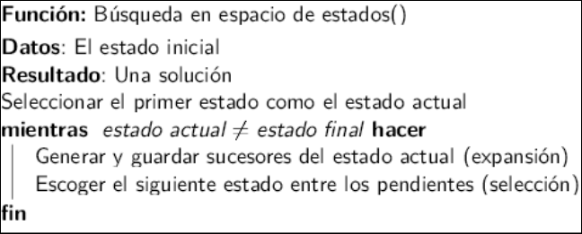
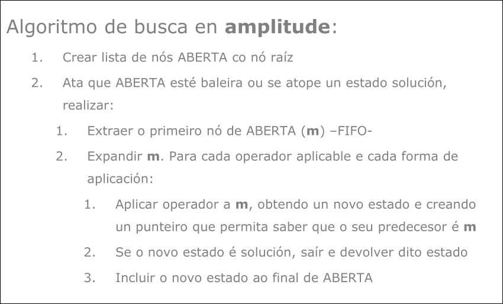
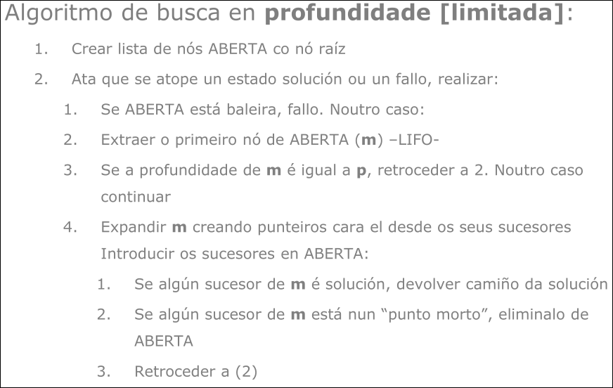
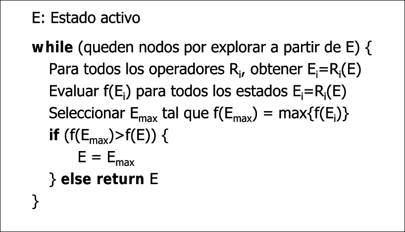
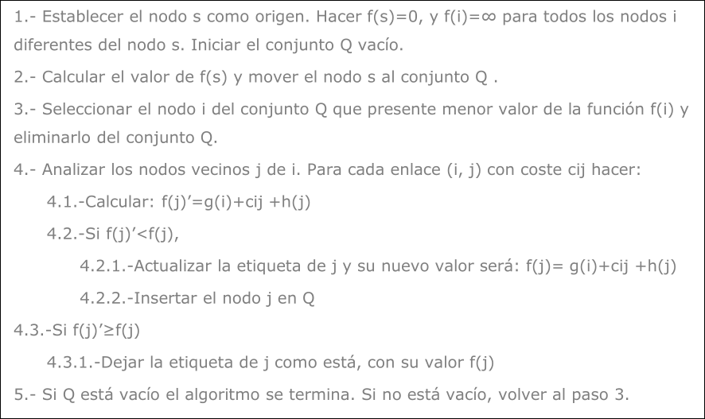
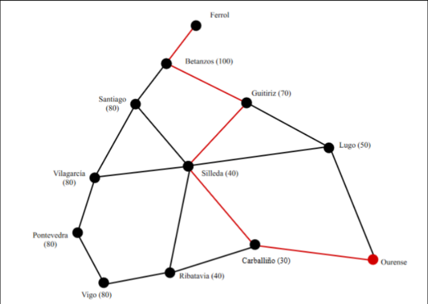
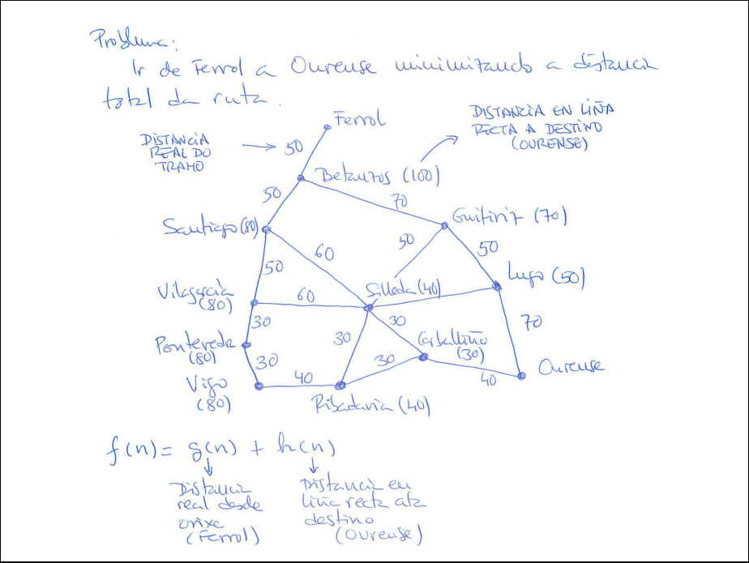
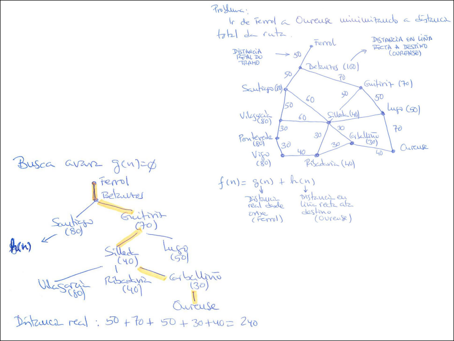
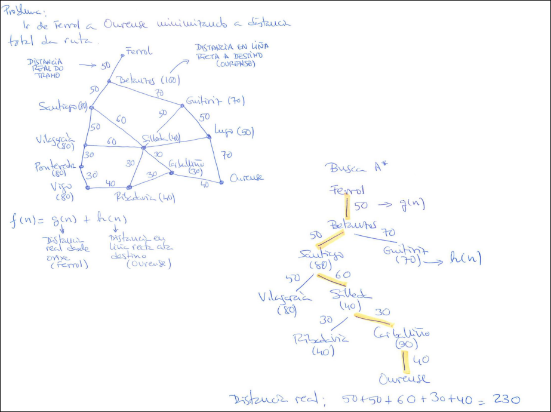

Búsqueda en Espacio de Estados
2.1 Conceptos Principales
Para resolver problemas en IA, formalizamos el mundo como un conjunto de estados y transiciones.
- Espacio de Estados: Conjunto de todos los estados alcanzables desde el estado inicial mediante una secuencia de operadores
- Estado Inicial: Descripción de partida del sistema
- Operadores (Acciones): Reglas que transforman un estado en otro (ej. mover una pieza, mover el hueco en un puzle)
- Prueba de Meta (Goal Test): Condición que determina si un estado es la solución
- Costo de Ruta (
): Costo acumulado desde el inicio hasta el estado actual (ej. número de movimientos, distancia en km)
La Función de Evaluación (
Componentes típicos:
: Lo que ya has recorrido (costo real desde el inicio hasta ) : Lo que te falta (estimación heurística desde hasta la meta)
Info
Tipos de grafos generados en los procesos de búsqueda:
- Implícito: Es la representación teórica o virtual del espacio de estados completo. Se define únicamente mediante el estado inicial y los operadores (reglas de transición), ya que sus nodos se generan dinámicamente bajo demanda y no se almacenan en memoria debido a su tamaño potencialmente infinito.
- Explícito: Es el subgrafo real que el algoritmo de búsqueda ha generado y almacenado en la memoria del ordenador durante su ejecución. Está formado por los nodos que han sido visitados o expandidos (listas ABIERTA y CERRADA) en el intento de encontrar la solución.
2.2 Estrategias de Búsqueda: Paso a Paso
Las estrategias se dividen en Ciegas (sin información del dominio) y Heurísticas (con información/estimaciones).
Heurística: Es un criterio basado en conocimiento del problema que ayuda a seleccionar los operadores o acciones más prometedoras, descartando opciones poco útiles. Una heurística es como un "atajo inteligente" que evita búsquedas exhaustivas.
2.2.1 Búsqueda a Ciegas (No Informada)
Las estrategias de búsqueda a ciegas (no informadas) exploran posibles soluciones sin información adicional sobre cuál camino puede ser mejor. Se utilizan principalmente en problemas donde no se tiene una heurística clara para guiar la búsqueda.
Características de una búsqueda:
- Búsqueda completa: garantiza encontrar una solución si existe.
- Búsqueda óptima: garantiza encontrar la mejor solución disponible.
- Complejidad temporal: número total de nodos explorados durante la búsqueda.
- Complejidad espacial: número máximo de nodos almacenados en memoria simultáneamente
Símbolos:
- r: factor de ramificación (promedio de sucesores por nodo)
- p: profundidad de la solución
- m: profundidad máxima
- l: límite de profundidad

Búsqueda en Amplitud (Breadth-First Search - BFS)
Funcionamiento: Explora nivel por nivel. Primero visita el nodo raíz, luego todos sus hijos, luego los nietos, etc.
Estructura de datos: Usa una lista ABIERTA como cola FIFO (Primero en entrar, primero en salir)
Propiedades:
- Completa: Sí, encuentra la solución si existe (en espacios finitos)
- Óptima: Sí, pero solo si el costo de los operadores es uniforme
- Problema: Consume muchísima memoria (
) porque guarda todos los nodos del nivel actual

Búsqueda en Profundidad (Depth-First Search - DFS)
Funcionamiento: Explora una rama hasta el final antes de retroceder. Si llega a un punto muerto, vuelve atrás.
Estructura de datos: Usa una lista ABIERTA como pila LIFO (Último en entrar, primero en salir)
Propiedades:
- Completa: No (puede caer en bucles infinitos o ramas infinitas)
- Óptima: No (puede encontrar una solución muy profunda antes que una corta)
- Ventaja: Muy eficiente en memoria (
), solo guarda la rama actual

Otras Búsquedas
- En profundidad limitada. Se establece un límite máximo de profundidad para la exploración. Evita ciclos infinitos, pero puede perder soluciones si el límite es bajo.
- En profundidad iterativa. Aplica búsqueda en profundidad con límites crecientes, combinando ventajas de amplitud y profundidad. Es completa y óptima (en espacios finitos).
- Bidireccional. Realiza la búsqueda simultáneamente desde el estado inicial y desde el objetivo, esperando que ambas se encuentren. Reduce la complejidad temporal y espacial.
| Estrategia | Completa | Óptima | Tiempo | Espacio |
|---|---|---|---|---|
| Amplitud | Sí | Sí | ||
| Profundidad | No | No | ||
| Prof. limitada | Si cuando |
No | ||
| Iterativa | Sí | Sí | ||
| Bidireccional | Sí | Sí |
2.2.2 Búsqueda Heurística (Informada)
A diferencia de la búsqueda a ciegas (que explora sin rumbo), la búsqueda informada utiliza una "pista" o estimación llamada Heurística (
- ¿Qué es una Búsqueda Informada? Es aquella que tiene conocimiento sobre el problema (como un mapa o una brújula) para estimar cuánto falta para llegar a la meta. Esto le permite ordenar las opciones y probar primero las que parecen más prometedoras, en lugar de probarlas al azar.
Antes de ver los algoritmos, debemos distinguir cómo toman decisiones:
Concepto Clave: Irrevocable vs. Tentativa
| Tipo de Estrategia | Definición Sencilla | Ejemplo Real |
|---|---|---|
| Irrevocable | "Quemar las naves". Tomas una decisión y avanzas sin guardar el camino de vuelta. No puedes rectificar. Si te equivocas, fallas. Ahorra mucha memoria pero es arriesgada. | Escalar una montaña en la niebla: solo subes por donde está más empinado. Si llegas a un pico falso, no puedes bajar y buscar otro pico. |
| Tentativa | "Dejar migas de pan". Guardas información de las alternativas no exploradas. Si un camino no funciona, puedes volver atrás (rectificar) y probar otro. | Explorar un laberinto con un hilo atado a la entrada. Si hay un muro, regresas por el hilo y pruebas otro pasillo. |
Búsqueda Retroactiva (Backtracking)
Tipo: Tentativa (Permite rectificar)
Es una estrategia inteligente que intenta no gastar memoria. Avanza en profundidad, pero si se equivoca, vuelve sobre sus pasos.
-
Funcionamiento:
- Elige el mejor hijo disponible (usando la heurística para ordenar) y avanza.
- Gestión de memoria estricta: Solo recuerda el camino actual (la ruta activa desde el inicio), no todo el árbol.
- Vuelta atrás: Si llega a un "callejón sin salida" (punto muerto), retrocede al padre y prueba el siguiente hijo prometedor 2.
-
Utilidad: Ideal cuando tienes muy poca memoria pero necesitas encontrar una solución, aunque no sea la más corta.
Nota
Si
Algoritmo de Escalada (Hill Climbing/Primeiro o mellor)
Tipo: Irrevocable (Versión estricta del algoritmo ávaro)
Es el ejemplo clásico de estrategia irrevocable. Busca la cima de la montaña dando siempre el paso que más sube, sin mirar atrás.
-
Estrategia: Evalúa los vecinos y se mueve inmediatamente al que tiene mejor heurística (parece estar más cerca de la meta), descartando y olvidando el resto.
-
Función de evaluación:
(Solo importa lo que falta). -
Riesgo: Como no guarda la historia ni alternativas, puede quedarse atrapado en máximos locales (una pequeña colina que parece la cima pero no lo es) o mesetas (donde todos los pasos son iguales y no sabe a dónde ir).

Algoritmo A* (A-Estrella)
Tipo: Tentativa La más completa es la estrategia estrella porque equilibra la precaución con la eficiencia. Guarda alternativas (es tentativa) y evalúa el coste total.
-
Estrategia: No solo mira cuán cerca parece estar la meta (
), sino cuánto le ha costado llegar hasta ahí ( ). -
Función de evaluación:
(Costo Total = Costo ya pagado + Costo estimado restante). -
Propiedad Clave: Si la heurística es admisible (nunca es pesimista, es decir,
coste real), A* garantiza encontrar la solución óptima (la más barata/corta) y es completa (siempre encuentra solución, sea admisible o no la heurística).
Info
Una heurística admisible u optimista: siempre suponer casos en los que la realidad será peor que la estimación.
Si eres Pesimista (h > coste real): Imagina que hay un atajo secreto que tarda 15 minutos. Pero tu heurística es pesimista y le dice al algoritmo: "Por ese callejón vas a tardar 1 hora".
- Consecuencia: El algoritmo se asusta, ve un coste altísimo y no explora ese camino.
- Resultado: Pierdes la oportunidad de encontrar el mejor camino (la solución óptima) porque tu estimación te engañó diciendo que era malo.
Si eres Optimista (h <= coste real): Tu heurística le dice al algoritmo: "Por ese callejón parece que tardas solo 5 minutos".
- Consecuencia: Como parece un camino barato, el algoritmo lo explora.
- Resultado: Al entrar, se da cuenta de que en realidad son 15 minutos (la realidad es peor que la estimación, como dice tu nota), pero al menos lo exploró.
- A* prefiere equivocarse pensando que un camino es "demasiado bueno" (porque así lo comprueba) que equivocarse pensando que es "demasiado malo" (porque entonces lo ignora y podría ser la solución).
En el caso del 8-puzzle se acostumbra a usar estas heurísticas: Misplaced Tiles (Piezas Descolocadas): Es la más simple. Simplemente cuentas cuántas fichas no están en su posición final.
- Cálculo: Si la ficha '1' está en la casilla del '2', suma 1. Si la '2' está bien colocada, suma 0.
- Ejemplo: Si 5 fichas están mal puestas,
Distancia de Hamming: En el contexto del 8-puzzle, es sinónimo de "Misplaced Tiles".
- Proviene de la teoría de la información (número de posiciones en las que dos cadenas de símbolos difieren). Aquí compara el "estado actual" con el "estado meta" y cuenta las diferencias.
Distancia de Manhattan (City Block): Es más precisa (y más informada) que la anterior.
- Cálculo: Para cada ficha, calculas cuántas casillas debe moverse (horizontal + vertical) para llegar a su destino. Luego sumas todas esas distancias.
- Por qué se llama así: Porque simula moverse por las calles de Manhattan (en cuadrícula), no puedes ir en diagonal.
- Ejemplo: Si la ficha '1' está a 2 casillas a la derecha y 1 abajo de su meta, su distancia es 3.
Heurística de Gaschnig: es una relajación del problema. Asume que puedes mover cualquier ficha a la posición del hueco (teletransportándola), no solo las adyacentes.
- Cálculo: Cuenta el número de intercambios necesarios para resolver el puzle si pudieras intercambiar el hueco con cualquier ficha del tablero para ponerla en su sitio de un solo movimiento.
- Suele dar un valor entre la de Hamming y la real.

2.3 Caso de Estudio Práctico: Ruta en Ciudades Gallegas
Este caso ilustra la diferencia entre ser "miope" (Voraz) y ser "inteligente" (A*).
El Problema: Ir de Ferrol a Ourense
: Distancia real por carretera (tramos negros en el mapa) : Distancia en línea recta a Ourense (números rojos en paréntesis)

A. Ejecución Búsqueda Voraz (
Solo mira la distancia recta a la meta.
- Ferrol va a Betanzos
- Betanzos tiene vecinos: Santiago (
) y Guitiriz ( ) - Decisión: Elige Guitiriz porque
(parece más cerca) - Resultado: Termina encontrando una ruta de 240 km. No es la mejor.
B. Ejecución Búsqueda A* (
Mira el pasado (
- Ferrol va a Betanzos (
) - En Betanzos, evalúa opciones:
- Ruta por Guitiriz:
- Ruta por Santiago:
- Ruta por Guitiriz:
- Decisión: Elige Santiago porque
. Aunque Santiago parece más lejos en línea recta, el costo total estimado es menor. - Resultado: Encuentra la ruta óptima de 230 km pasando por Santiago y Silleda.



2.4 Destellos de calidad del Senén en clase
2.4.1 Problema del Viajante de Comercio (TSP)
- Concepto: Es un problema clásico de optimización combinatoria. Dado un conjunto de nodos (ciudades) y las distancias entre ellos, el objetivo es encontrar un ciclo hamiltoniano de coste mínimo. Esto significa hallar una ruta cerrada que visite cada nodo exactamente una vez y regrese al nodo de origen, minimizando la distancia total recorrida.
- Ejemplo: Un repartidor debe visitar 100 ciudades. Parte de una central fija (ciudad 0). Debe trazar una ruta que pase por las 99 restantes una sola vez y vuelva a la 0, gastando la menor cantidad de combustible posible.
2.4.2 Tamaño del Espacio de Búsqueda
- Concepto: Es la cardinalidad del conjunto de todas las soluciones posibles (válidas) para el problema, independientemente de si son óptimas o no. En problemas de permutación como el TSP, este tamaño crece de forma factorial con respecto al número de elementos variables.
- Ejemplo: En el caso de 100 ciudades con un punto de partida y final fijo (la ciudad de origen no se permuta), el número total de rutas posibles son las permutaciones de las 99 ciudades restantes.
2.4.3 Tamaño del Entorno (Contorna)
-
Concepto: El entorno es el subconjunto de soluciones vecinas accesibles desde la solución actual aplicando una única vez un operador de transformación específico. Su tamaño (
) depende del operador elegido y del número de elementos sobre los que se puede aplicar. -
Ejemplo: Usando el operador de intercambio de dos elementos (swap) sobre las 99 ciudades móviles (excluyendo origen/final).
Debemos calcular cuántas combinaciones de 2 elementos distintos se pueden formar con los 99 disponibles. Matemáticamente, son combinaciones sin repetición de 99 elementos tomados de 2 en 2:
2.4.4 Búsqueda Tabú
- Concepto: Es una metaheurística de búsqueda local diseñada para escapar de óptimos locales. Explora el entorno de la solución actual y se mueve a la mejor vecina (aunque sea peor que la actual), pero utiliza una estructura de memoria a corto plazo (lista tabú) para restringir la búsqueda.
- Ejemplo: Si el algoritmo decide intercambiar la ciudad A con la B para generar una nueva ruta, este movimiento se registra en la lista tabú. Durante un número determinado de iteraciones (tenencia tabú), el algoritmo tiene prohibido deshacer ese cambio (volver a intercambiar B con A), forzando así la exploración de nuevas zonas del espacio de búsqueda en lugar de entrar en ciclos repetitivos